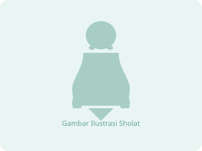

Aplikasi edukasi ibadah
Belajar Tata Cara Sholat Sesuai Sunnah
Panduan 13 gerakan sholat dengan rujukan Himpunan Putusan Tarjih (HPT) Muhammadiyah, disajikan tenang dan mudah dipelajari.
Mulai Belajar
Mode Dewasa
Sumber: Himpunan Putusan Tarjih (HPT) Muhammadiyah

Qiyam → Salam